The Ultimate Guide for MARIO STRIKERS CHARGED Online (Wii & Dolphin)
Last revised April 19, 2026
1. Terms and Definitions
NINTENDO WFC: Nintendo's original online service for Nintendo Wii and DS games. It was terminated in 2014.
WIIMMFI: A community-run online service that replaces Nintendo WFC for supported games.
DOLPHIN: An emulator for Nintendo GameCube and Wii games that can run on PC.
NETPLAY: A Dolphin feature that lets players host or join an online room using a shared code.
HOMEBREW: Unofficial software/tools for Wii or Wii U, commonly used to run apps and game loaders (for example USB Loader GX).
WI-FI (WLAN): A wireless local network connection used by devices to connect to a router without a cable.
ROUTER: The network device in your home that connects your devices to the internet (often your Wi-Fi box).
ETHERNET: A wired network connection standard (LAN). In this guide, it means using a cable instead of Wi-Fi for a more stable connection.
MOBILE ROUTER OR HOTSPOT: A phone or mobile device feature that shares mobile data as a Wi-Fi network.
SSID: The name of a Wi-Fi network.
DNS: Domain Name System. In this context, custom DNS settings can redirect game network requests from Nintendo WFC endpoints to Wiimmfi endpoints.
REGION-LOCK: A restriction where games/services only connect between matching regions. For MARIO STRIKERS CHARGED online, players must use the same game region.
PORT: A network endpoint used by apps/services to send and receive traffic. If required ports are blocked, online services may fail to connect.
FIREWALL: A security system that filters incoming and outgoing network traffic based on rules. You may need to allow Dolphin through your firewall for online play.
Choose your path: use Section 2 for Wii setup or Section 3 for Dolphin setup.
2. A: Wii/Wii U Setup
Requirements:
Wii or Wii U with vWii mode (eShop game version is not supported)
A copy of MARIO STRIKERS CHARGED
Homebrew (loads the game through USB/SD card) or the DNS method (loads the game directly from the disc for a non-modded console)
2.1 Homebrew Method
The Homebrew method lets you mod your Wii or Wii U console. This allows you to launch MARIO STRIKERS CHARGED, cross-play with Dolphin users, and play without a physical copy through a USB loader.
Follow these links if you cannot use a valid copy or if you need cross-play with the PAL version of the game (competitions use the PAL version, and Homebrew allows region loading on NTSC consoles):
Homebrew Wii: Wii Guide
Homebrew Wii U: Wii U Hacks Guide
2.2 DNS Method (Wii Only)
This DNS method is supported on Nintendo Wii only and is not supported on Wii U.
To use Wiimmfi (required for non-modded Wii online play in MARIO STRIKERS CHARGED), configure your Wii internet DNS settings as follows:
- Go into your Wii Options
- Wii Settings > Page 2
- Internet
- Connection Settings
- Select your active Connection from the list
- Change settings
- Click the right arrow button until you reach the screen where you can change DNS settings
- Select No and then Advanced Settings
- Set Primary DNS to 95.217.77.181 and Secondary DNS to 8.8.8.8
- Confirm and start a Connection Test
- If the connection test fails, make sure your Wii has Internet access and double-check your settings (see Section 5.1).
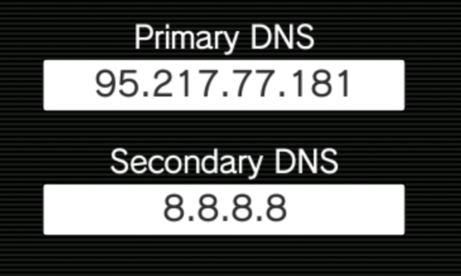
2.3 Connection Quality for Wii
2.3.1 LAN Adapter
To ensure the best possible connection speed on Wii, it is highly recommended to use a Wii LAN Adapter, which allows a wired connection from your Wii to your router.
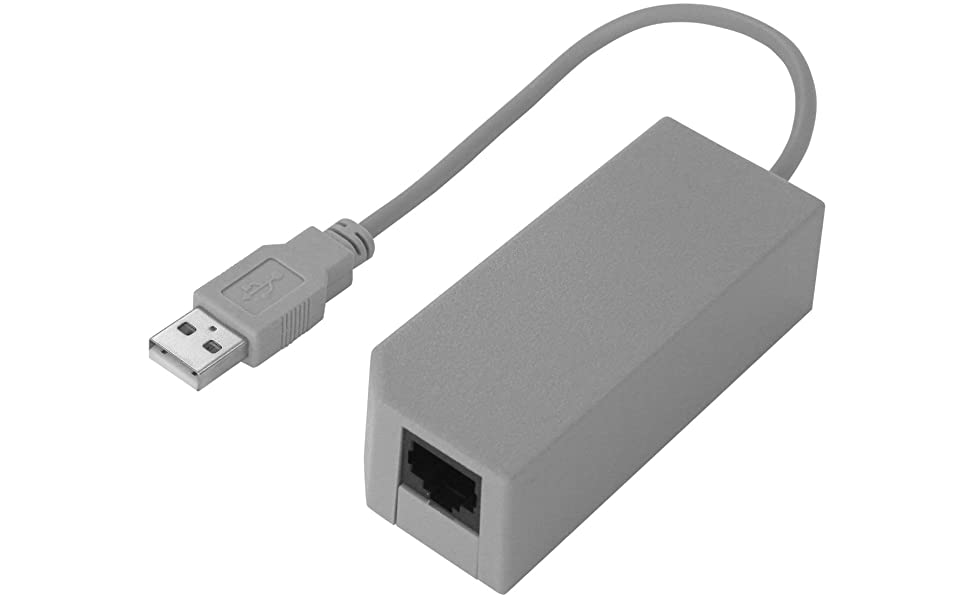
2.3.2 Latency and Speed
For online play, stability matters more than raw internet speed.
Download/upload speed is not the main factor for match quality. Ping is the most important factor.
- What is ping?
Ping is the delay between your input and the game response. Lower ping means smoother control.
- What ping is good?
40-60 ms or lower is a good competitive target. Under 30 ms is ideal. Above 100 ms causes clear delay, and above 170 ms some matches may fail to connect.
Example: 10 ms usually feels much smoother than 100 ms.
- What is lag?
Lag means delayed or unstable gameplay. Inputs can feel late, the game may freeze briefly, then catch up, or disconnect.
2.3.3 Ping Optimization
- Check your ping before playing. Wii ping is often higher than PC ping.
OOKLA SPEEDTEST
INTERNET HEALTH TEST
SPEEDOF.ME - If you use Wi-Fi, stay close to your router.
- Use a wired connection when possible (Wii LAN Adapter).
- A powerline adapter can improve connection stability.
- During matches, avoid heavy network use (YouTube, Netflix, Twitch, large downloads).
- Disconnect unused devices from your network when possible.
- If available, use fiber or a higher-quality internet plan.
- If issues continue, check for outages with your internet provider.
- Advanced users: prioritize your Wii or Wii U in router settings (QoS/device priority).
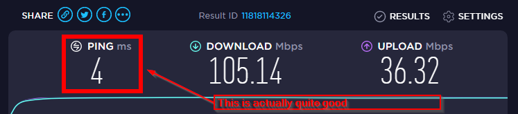
3. B: Dolphin Setup
This section explains how to get started with Dolphin Emulator.
3.1 Requirements and Specs
Dolphin version 2603a or newer
Requirements:
- MARIO STRIKERS CHARGED (R4QP01) game file (ISO, WBFS, RVZ, ...). NKit should be avoided whenever possible.
- A NAND backup for Dolphin Wiimmfi to enable cross-play with Wii players (see Section 3.4.1).
- Any controller or Wii Remote with MotionPlus (emulates an IR pointer through motion sensors).
- A computer/laptop with Bluetooth or a Bluetooth USB dongle (for wireless controllers).
- Wii Remote MotionPlus Profile for Dolphin or Customizable Profile with Mouse Used as IR Pointer.
- Recommended PC Specifications
OS: Windows 11
CPU: Intel Core i5 or better
GPU: Intel HD 520 / NVIDIA GTX 950 / AMD Radeon RX 470 or better
Memory: 8GB
*Windows 10 is no longer recommended because Microsoft support has ended.
3.2 Graphics and Core Emulator Settings
- Go to Options > Graphics Settings.
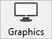
- This opens the graphics configuration window.
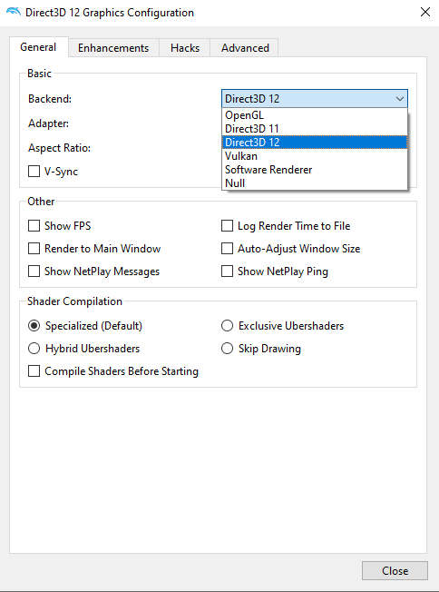
Under the General tab, select Direct3D 12 if you have a relatively recent computer (2018+).
On low-end computers, you may need to use Direct3D 11 if Direct3D 12 stutters.
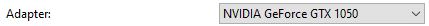
- The adapter below Backend must be your gaming graphics card.
If you're using a laptop on Windows 10, you may need to manually select your high-performance graphics card instead of Intel HD Graphics.
- Click the Enhancements tab.
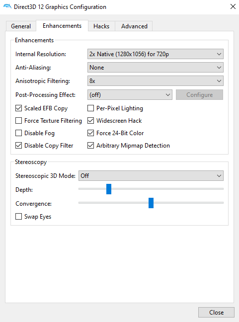
There you can select the resolution in which MARIO STRIKERS CHARGED will be emulated.
The higher the internal resolution is, the more it demands a powerful computer to run smoothly.
In general, 2x Native (1280x1056) for 720p should run well on any modern, average computer. High-end computers should be able to handle 3x Native (1920x1584) for 1080p. But if your device is low end, you might be stuck with the default: Native (640x528).
Anti-aliasing:
For Wii games, only high-end computers can reliably handle anti-aliasing. Unless you are very particular about rendering quality, you likely will not notice a major difference.
Full Screen:
By default, Dolphin loads games in a window. Press Alt+Enter to enter full screen. Press Alt+Enter again to go back to window mode. You can also click on Full Screen to enter full screen.
- Go to the 'Hacks' tab and tick 'GPU Texture Decoding' if you have a good graphics card.
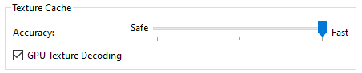
This 'SUPER SMASH BROS. MELEE' tutorial for optimizing Dolphin graphics card settings also applies to MARIO STRIKERS CHARGED if you still have issues running the game.
3.2.1 Core System Settings
To ensure you have the smoothest Dolphin experience on MARIO STRIKERS CHARGED, you need to do the following.
Go to Settings and, under the General tab, make sure 'Enable Dual Core' is ticked.
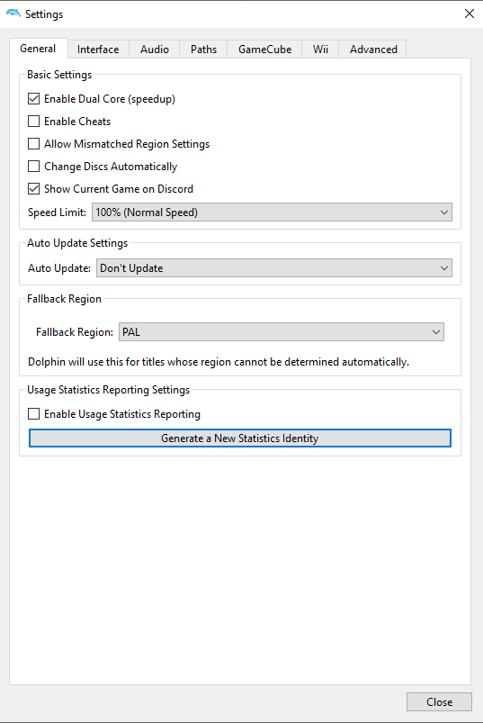
Go to the Paths tab and select your games folder and Wii NAND root folder (if you have one).
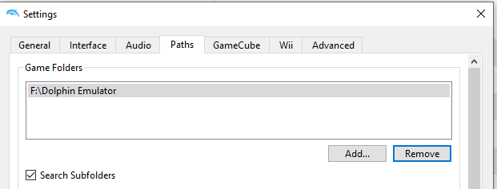
Then, under the Wii tab, tick 'Use PAL 60 Mode' so the game can run smoothly at 60 FPS.
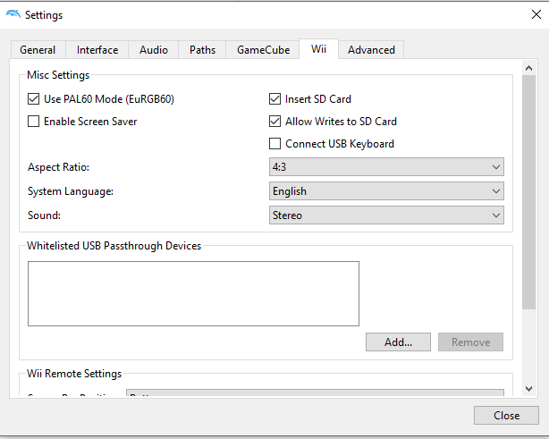
3.3 Controller Setup (Core)
- If you want to use a Wii Remote + Nunchuk on Dolphin, first download the 'Wii Remote MotionPlus' profile (see requirements above).
Drag the .ini file to the folder below.
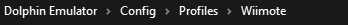
- Go to Options > Controller settings.
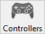
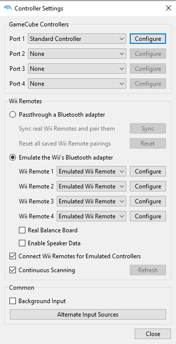
In the controller settings window, configure Dolphin exactly as shown above, with all four ports set to "Emulated Wii Remote."
- For Wii Remote users, activate Bluetooth first. Tick the 'Continuous scanning' and 'Connect Wii remotes for Emulated Controllers' boxes. Then press the red button on the back of your Wii Remote to sync with Dolphin, and configure Wii Remote 1 by loading the Wii Remote profile.
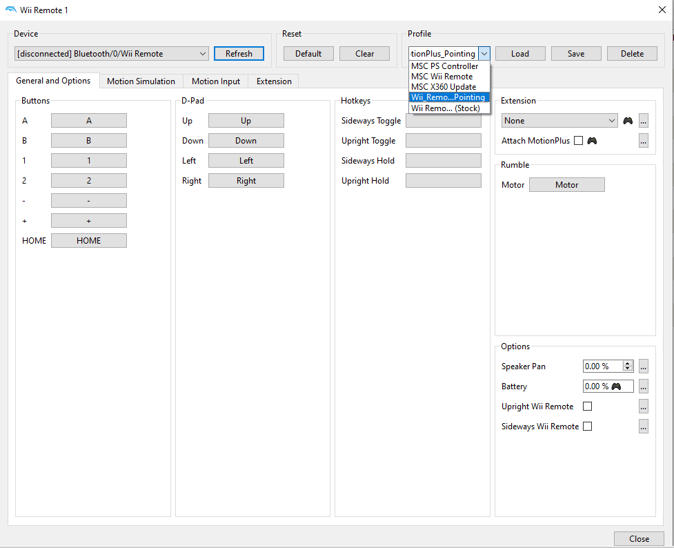
If you encounter problems with your Wii Remote, here is a YouTube tutorial.
- For non-Wii Remote users, map your controls using the information below.
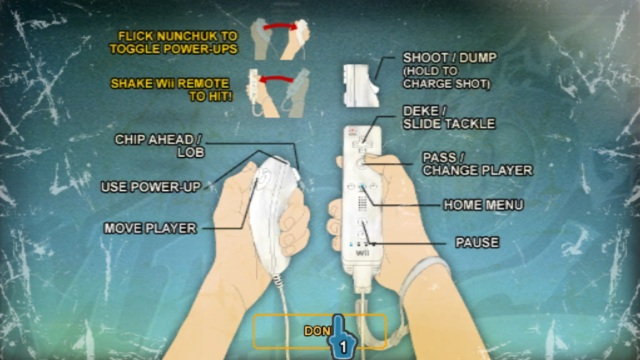
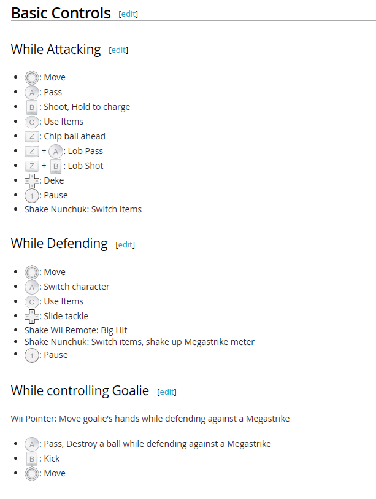
The IR Pointer is the only way to move the cursor/hand in in-game menus.
Use the Customizable Profile that uses Mouse as IR Pointer (see requirements).
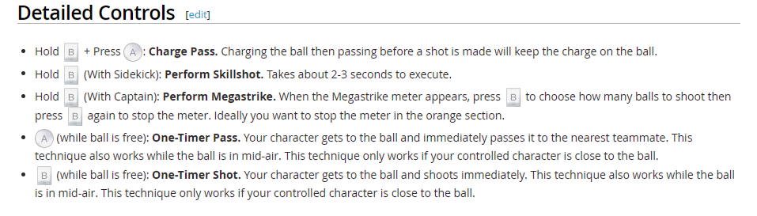
- For non-Wii Remote controllers, make sure Extension is set to 'Nunchuk' under the 'General and Options' tab.
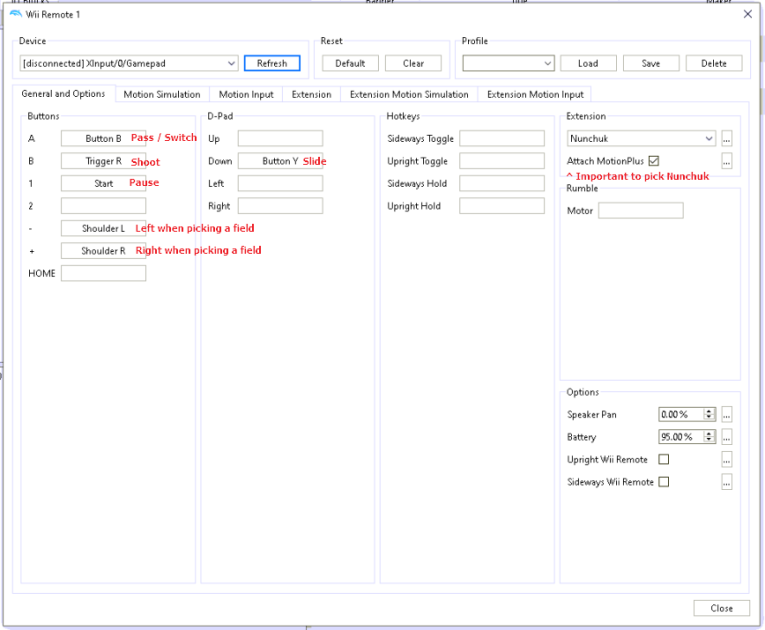
Configure the Motion Simulation tab as follows:
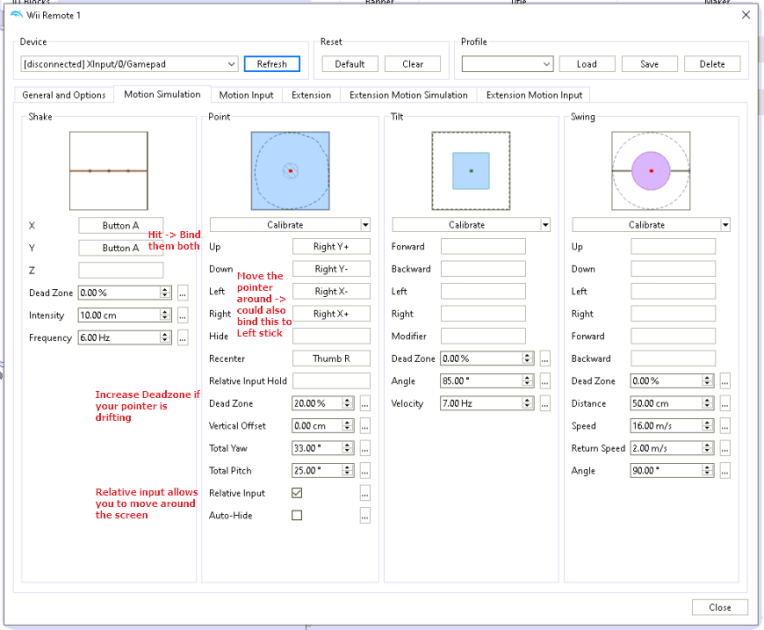
Also make sure your virtual Nunchuk stick is calibrated under the 'Extension' tab.
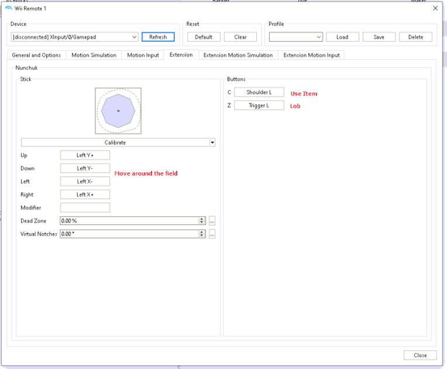
3.4 Online Setup: Wiimmfi & Netplay
Wiimmfi is currently the recommended way to play MARIO STRIKERS CHARGED online.
3.4.1 Use Wiimmfi with Dolphin
To use Wiimmfi servers with Dolphin, you need a NAND backup from a Wii. This gives you a Mii account with a friend code on Dolphin, which enables cross-play with Wii friend codes.
This link explains how to dump a NAND with BootMii. You can also import the community NAND.
How to Import the Mario Strikers Community NAND
At this point, you should have nand.bin + key.bin files on your PC and have selected your NAND path as explained previously (Go to Settings > Path > Wii NAND Root folder).
Now in Dolphin, you should see Tools > Load Wii System Menu.
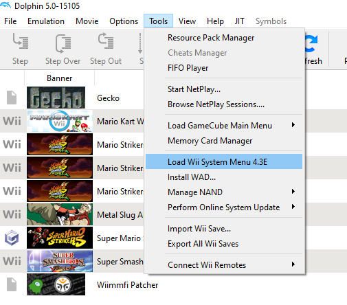
Click it to boot the Wii Menu. From there, go to the Mii Channel and create a new Mii so Wiimmfi can register a new profile.
PS: If needed, you can follow this tutorial to add a Mii in Dolphin.
How To Add Your Mii To Dolphin
Once you're done, stop the emulation and then load the Wii Menu again as before.
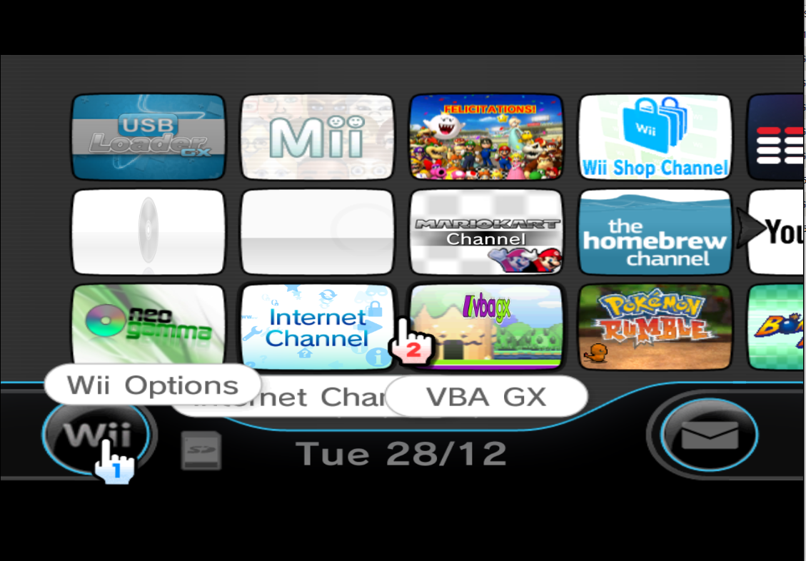
Go to Wii Options > Wii Settings > Internet > Connection Settings and create a wired connection (it does not matter if your PC/laptop is on Wi-Fi).
The connection test should be successful. Refuse the update if prompted and select to use this connection.
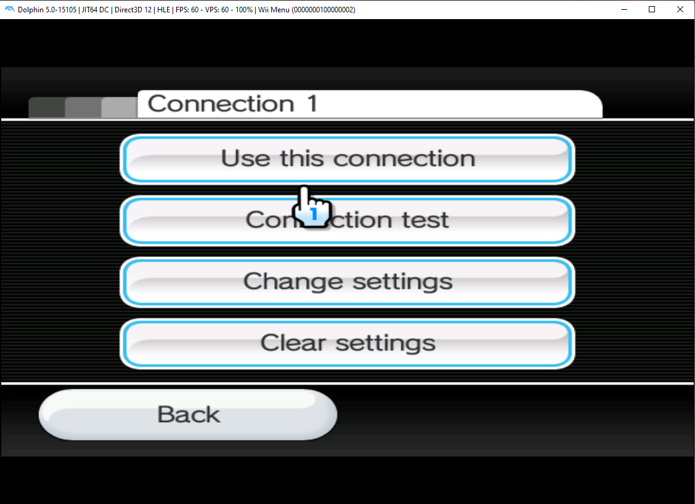
You can stop the emulation again and launch MARIO STRIKERS CHARGED directly from your Dolphin game list. You can now use Wiimmfi servers on Dolphin!
If you encounter error code 20100, your game file is likely unpatched or needs the latest Wiimmfi patch (see Section 5.1).
3.4.2 Use Netplay with Dolphin
If you don't have a NAND backup, or your Wii console has been banned, you can use Netplay to play MARIO STRIKERS CHARGED multiplayer.
With Netplay, you can play with up to four players and run 2v2 matches.
Every player needs the same Dolphin version to connect (see Section 5.1).
For Netplay to work, click Tools > Start Netplay.
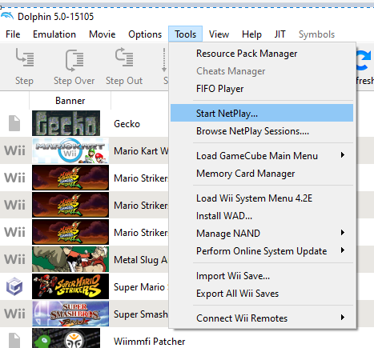
A small window opens.
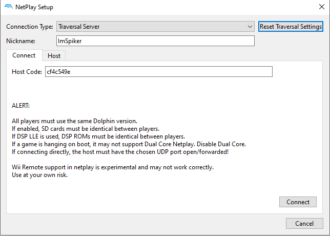
The 'Connect' tab is for joining a host via a Code.
The 'Host' tab is for hosting a room.
To create a room, set the connection type to 'Traversal server,' then select a game to host.
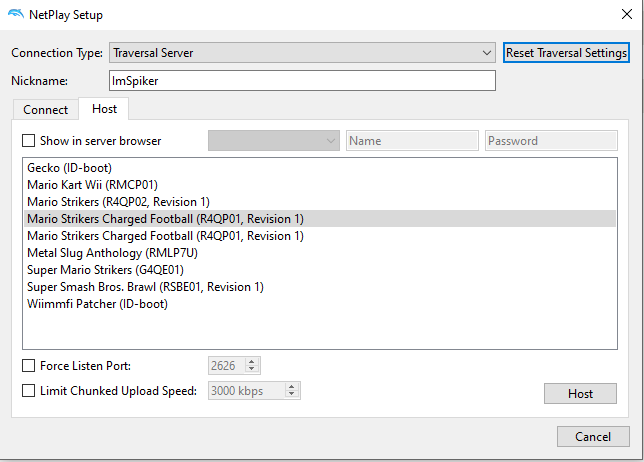
Once you click 'Host,' a new window appears for your room. I highly recommend going to 'Data,' ticking 'Sync Saves' and 'Load Saves,' and unticking the rest as shown below:
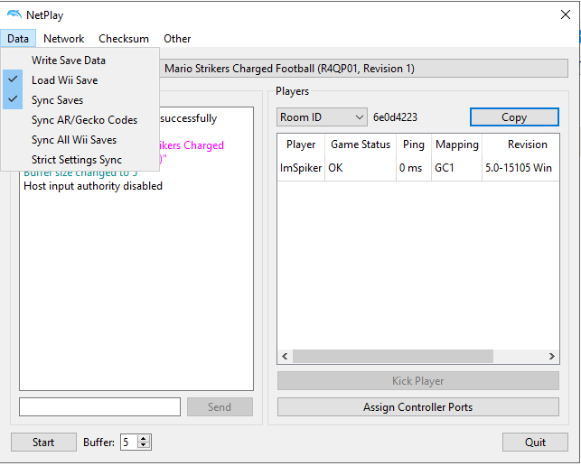
That's the only way to not get your game save overwritten every time you join someone on Netplay.
Click Copy. This copies the Room ID code used to join the room.
Now click 'Assign Controller Ports' or your controls will not work in-game. Click that button, remove every GC port, and assign Wii Remote 1 and 2 to the correct players (you can add Wii Remote 3 and 4 if there are 3-4 players in the room).
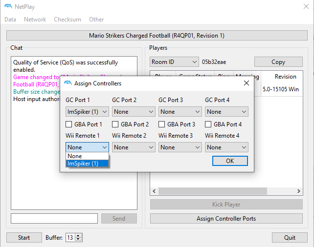
Now set the buffer. When players join, adjust the buffer based on the highest ping in the room.
The SUPER SMASH BROS. MELEE community suggested the following rule of thumb for pad buffer:
Use 1 buffer per 8 ms, rounded up to the nearest whole number (1 Pad Buffer = 1/4 frame of lag).
Example: highest ping in room -> 58ms/8 = 7.25 = 8 buffer.
I personally suggest dividing ping by 10 and adding 2 or 3 buffer to cover potential lag spikes. You can also remove 1 or 2 buffer if the game feels smooth.
You can now click Start, and the game should work correctly.
Make sure every player has all four Wii Remote slots in controller settings set to 'Emulated Wii Remote,' or your cursor may not move in-game (see Section 5.1).
3.5 Optional: Joy-Con / Switch Pro Flow
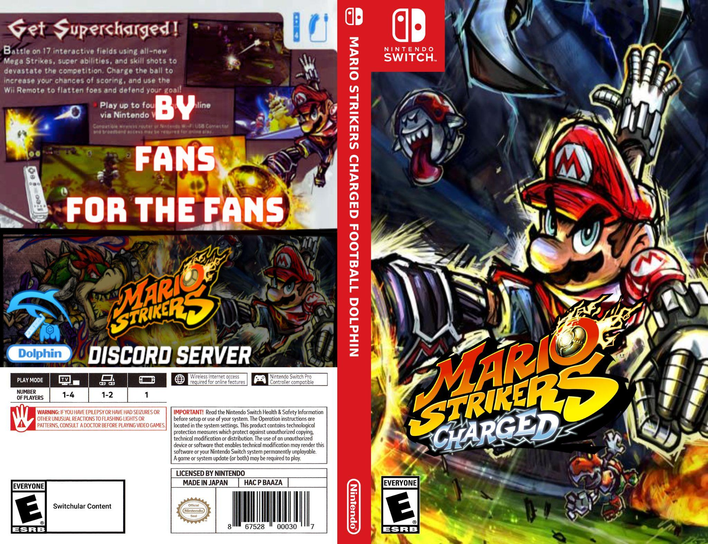
This section explains how to connect Joy-Cons or Switch Pro Controllers using the Dolphin presets I created. If you're interested, you can also follow Steam Link after this tutorial to play MARIO STRIKERS CHARGED on a phone/tablet for a handheld-style experience.
Additional Requirements:
Joy-Con Presets for Dolphin or
Switch Pro Controller Profile for Dolphin
BetterJoy 7.1+ for Joy-Cons or Switch Pro Controller support
Joy-Con or Switch Pro Controller
Nintendo Switch (to calibrate your Joy-Cons)
3.5.1 Connect Joy-Cons / Switch Pro Controller
To connect your Joy-Cons, download and install BetterJoy. This software makes Joy-Con/Switch Pro inputs appear as PS4/Xbox controller inputs, and it also recognizes Joy-Con/Switch Pro motion and sensor data.
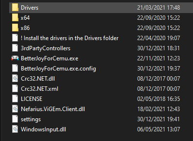
After downloading BetterJoy, extract the zip file and go to the Drivers folder.
Install ViGEmBusSetup_x64.msi, then open the HIDGuardian folder and run Install.bat.
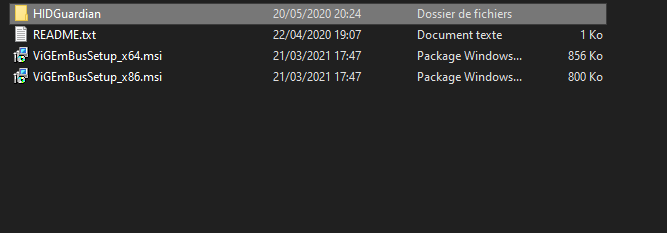
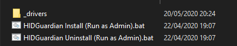
Once that is done, return to the root of the BetterJoy folder and launch BetterJoyForCemu.
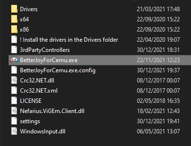
In the BetterJoy window, click the small arrow on the right side to open the Config panel used by your Joy-Cons or Switch Pro Controller.
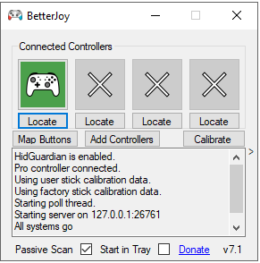
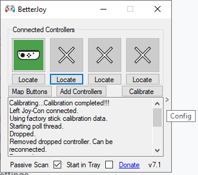
Check the values and make sure BetterJoy is configured exactly as shown below (otherwise it won't work or you may get input delay).
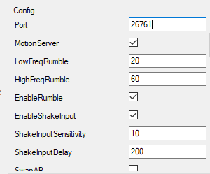
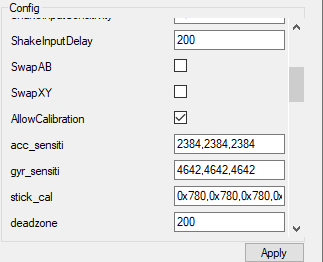
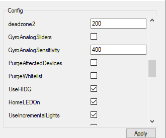
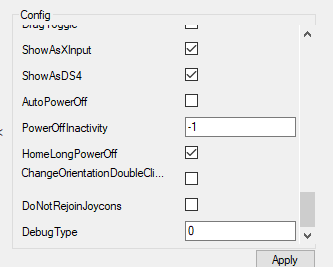
These are the only values you need to set exactly as shown.
After pre-configuration, click Apply (otherwise your changes will not be saved).
You can now go to your Windows Bluetooth settings and connect your Joy-Con or Switch Pro Controller via Bluetooth. To enable pairing, you need to hold the SYNC Button (or the button at the back of the Switch Pro Controller).
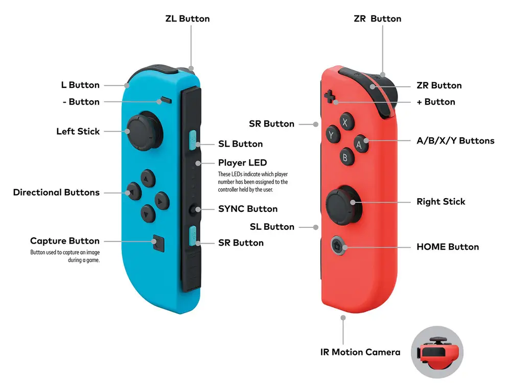
When it's configured correctly, you should see something like this:
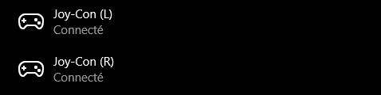
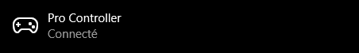
Return to BetterJoy and you should see this, or this:
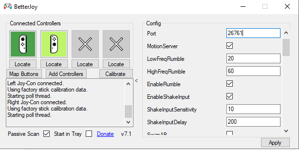
Two important things to know for Joy-Cons:
1. If you want to play alone with both Joy-Cons, they should be set upward like in the previous image.
2. If you want to play locally with someone or use a single Joy-Con, set it as shown below (clicking it changes its position).
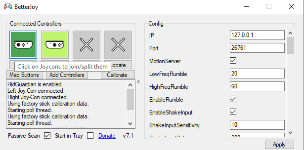
For that scenario, tick the "Do not rejoin Joy-Cons" box in the Config panel.
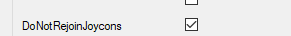
- Now that you're successfully connected, click Apply and minimize the window (do not close it, or Dolphin will not recognize the Joy-Con).
3.5.2 Configure Controls in Dolphin
Open Dolphin and go to Controller Settings > Alternate Input Sources.
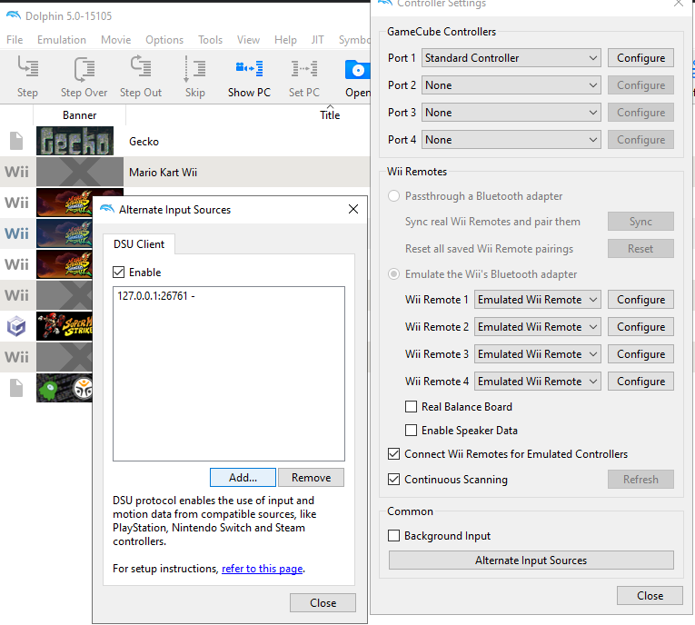
Click Add and enter the same server port used in BetterJoy (26761).
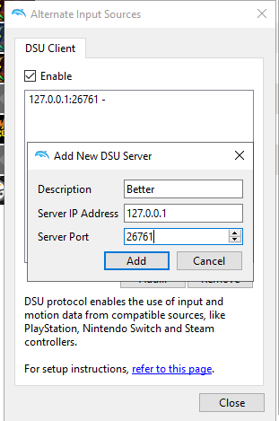
Open Wii Remote 1. Among the devices, you will see 'DSUClient'.
DSUClient/0/ = Joy-Con 1
DSUClient/1/ = Joy-Con 2
You can now customize your controls using the information in Chapter 3.3, but I highly recommend using the Dolphin presets provided.
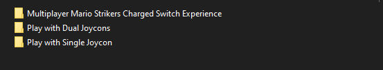
The 1st folder contains presets for local multiplayer.
The 2nd folder contains presets for solo play with both Joy-Cons.
The 3rd folder contains presets for single Joy-Con play.
The next chapter explains these presets in detail.
3.5.3 Joy-Con Preset Guide
Move the Joy-Con preset .ini files you want to use for Dolphin to the following path:
Dual Joy-Con presets:
JoyConsDual MSC Switch.ini
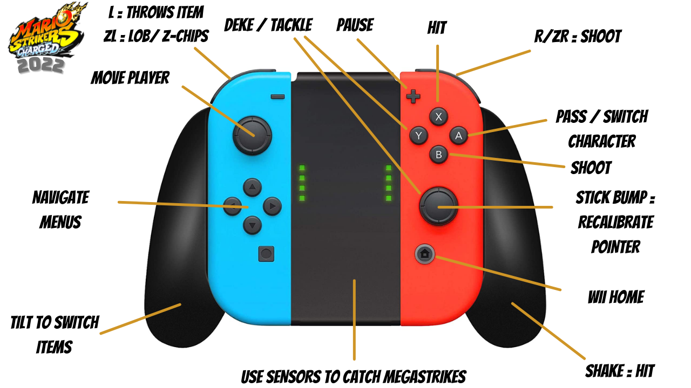
JoyConsDual MSC Switch inverted.ini (changes are in orange)
Single Joy-Con Left (Blue/Minus) presets:
Single Joycon Left(-).ini
Single Joycon Left(-) Inverted.ini (changes are in orange)
Single Joy-Con Right (Red/Plus) presets:
Single Joycon Right(+).ini
Single Joycon Right(+)Inverted.ini (changes are in orange)
4. In-Game Optimization and Competitive Stability
This guide helps both newcomers and experienced players improve their MARIO STRIKERS CHARGED gameplay experience.
These optimizations can be used for both casual and competitive play and are highly recommended.
4.1 Camera and Sidekick Presets
4.1.1 Camera Settings
In both Mario Strikers games, it is recommended to zoom out as much as possible for the best full-field view.
To do this, follow these steps.
- In the MARIO STRIKERS CHARGED menu, go to OPTIONS (wrench icon).
- VISUAL OPTIONS
- Select Camera Type STATIC and Level 1.
- Accept
4.1.2 Preset Sidekicks for Online Play
Is there anything worse than playing online and having to choose your captain's sidekicks every time, or accidentally loading a predefined team?
Here is the solution:
Select the sidekicks of your captains offline, start a match against the CPU and leave the match afterwards.
Log in via Wiimmfi and this information should remain saved in your Mii profile.
4.2 Console Display and Output Settings
4.2.1 Widescreen Settings
Always set your Wii's aspect ratio to 16:9, which works best with the camera settings configured above. To do this, follow the steps below:
- Go into your Wii Options
- Wii Settings
- Screen
- Widescreen Settings
- Select Widescreen (16:9) and confirm.
4.2.2 TV Type
To improve the visual quality and FPS of Wii games, please follow the steps below:
- Go into your Wii Options
- Wii Settings
- TV Type
- Select EDTV / HDTV (480p) if available, otherwise select 60Hz (480i)
Please note that EDTV / HDTV (480p) will only be available if you have a Component cable connected to your Wii.
- Do not forget to set your TV/Monitor to Game mode in order to reduce input lag.
4.3 QOL Gecko Codes
4.3.1 Optional Convenience Codes
Additional quality-of-life and fun codes
Unlock Everything (Characters, Stadiums and Cheats) (PAL)
04c5f2f0 00000001 04c5f2e4 00000001 04c5f300 00000001 04c5f2fc 00000000 04c5f304 00000000 04c5f2dc 00000000 04c5f2d8 00000000 C210F71C 00000002 3800FFFF B00386AC 60000000 00000000 C210F63C 00000002 3860FFFF 907F0068 60000000 00000000
Fix NK-Bug permanently (PAL)
48000000 806DF7A0 DE000000 80008180 14000178 01010012 E0000000 80008000
All stadiums are fast-paced (Bowser Stadium speed on slow fields)
C20081EC 0000000D D01F000C 3D60909B 616B6560 7C1F5800 40820010 3D803F26 618C6666 919F000C 396BFFF0 7C1F5800 4082000C 3D800000 919F000C 396BFFF0 7C1F5800 40820010 3D803E4C 618CCCCD 919F000C 396BFFF0 7C1F5800 40820010 3D803F19 618C999A 919F000C 00000000
Blue Peach outfit against red opponents
04504ed0 000000f0 C21C51F0 00000007 93A30008 3C608050 38634D00 2C1D0003 4082000C 38800001 48000008 38800005 90830000 9083005C 9083033C 908303F4 60000000 00000000 C21A34CC 00000003 80BE0000 2C050005 40A20008 38600000 2C030000 00000000 C208EEB4 00000003 80BD0000 2C050005 40A20008 38600000 2C030000 00000000 C2275070 00000003 80BD0000 2C050005 40A20008 38600000 2C030000 00000000 C22784A8 00000003 80BC0000 2C050005 40A20008 38600000 2C030000 00000000
Show white shot counter in the results screen
C0000000 00000008 3D8080C8 3D4080C6 A12CE830 A16CE832 7D6B4A14 B16A644E A16CE834 B16A6450 A12CE7DE A16CE7E0 7D6B4A14 B16A64C0 A16CE7E2 B16A64C2 4E800020 00000000
*Instead of "Mega Strike goals / Mega Strike shots," it shows "White and Yellow shots / Red and Orange shots."
Control Kritter
48000000 8056a760 de000000 00007fff 020001b4 00000000 e0000000 80008000 28585ee2 00001000 280001b4 00ff0000 000001b4 00000001 e0000000 00000000 28585ee2 00000100 280001b4 00ff0100 000001b4 00000000 e0000000 80008000 285860d2 00001000 280001b4 00ff0000 000001b4 00000002 e0000000 00000000 285860d2 00000100 280001b4 00ff0200 000001b4 00000000 e0000000 80008000 285862c2 00001000 280001b4 00ff0000 000001b4 00000003 e0000000 00000000 285862c2 00000100 280001b4 00ff0300 000001b4 00000000 e0000000 80008000 285864b2 00001000 280001b4 00ff0000 000001b4 00000004 e0000000 00000000 285864b2 00000100 280001b4 00ff0400 000001b4 00000000 e0000000 80008000 C0000000 00000015 3D808000 88AC01B4 2C050001 41800094 3D808057 814CA760 7C0A6040 41800084 3D208058 2C050001 40820008 A1295EE2 2C050002 40820008 A12960D2 2C050003 40820008 A12962C2 2C050004 40820008 A12964B2 C04A067C 3D603E00 916A067C C06A067C 71250008 41820008 EC42182A 71250004 41820008 EC421828 D04A067C C04A0678 71250002 41820008 EC42182A 71250001 41820008 EC421828 D04A0678 4E800020 00000000 28585ee2 00000010 280001b4 ff000000 000001b5 00000001 e0000000 00000000 28585ee2 00000100 280001b4 ff000001 000001b5 00000000 e0000000 80008000 285860d2 00000010 280001b4 ff000000 000001b5 00000002 e0000000 00000000 285860d2 00000100 280001b4 ff000002 000001b5 00000000 e0000000 80008000 285862c2 00000010 280001b4 ff000000 000001b5 00000003 e0000000 00000000 285862c2 00000100 280001b4 ff000003 000001b5 00000000 e0000000 80008000 285864b2 00000010 280001b4 ff000000 000001b5 00000004 e0000000 00000000 285864b2 00000100 280001b4 ff000004 000001b5 00000000 e0000000 80008000 C0000000 00000015 3D808000 88AC01B5 2C050001 41800094 3D808057 814CA764 7C0A6040 41800084 3D208058 2C050001 40820008 A1295EE2 2C050002 40820008 A12960D2 2C050003 40820008 A12962C2 2C050004 40820008 A12964B2 C04A067C 3D603E00 916A067C C06A067C 71250008 41820008 EC42182A 71250004 41820008 EC421828 D04A067C C04A0678 71250002 41820008 EC42182A 71250001 41820008 EC421828 D04A0678 4E800020 00000000
Press - to take control of the home Kritter.
Press + to take control of the away Kritter.
Press 2 to stop controlling Kritters.
Tennis tiebreaker in First-to-X goals
C21012E0 0000000C 3E6080C5 6273F7B0 A2930002 2C080001 4181000C A25300BE 7E549378 3A94FFFF 7C144000 40820028 A2A6002E 7C14A800 4082001C 2C1400FF 41820014 819300D4 2C0C0002 40820008 3A940001 3A940001 B2930002 B106002C 60000000 00000000
- Outscore your opponent by at least 2 goals to win.
- Activates only if you select "safe megastrikes" from the player-cheats menu.
4.4 Gameplay Tips
Here is a playlist of the most relevant tutorials if you wish to learn MSC mechanics and improve your gameplay.
5. Troubleshooting and References
5.1 Troubleshooting Quickchecks
- Connection fails on Wii DNS method: recheck DNS values in Section 2.2 and rerun the connection test.
- High delay or unstable matches: apply the connection checklist in Section 2.3.3.
- Wiimmfi Error 20100 on Dolphin: your game is likely unpatched. Apply the latest Wiimmfi patch and retry.
- Netplay room issues: confirm all players use the same Dolphin version and verify controller port assignment in Section 3.4.2.
- Cursor does not move in-game: set all required controller slots to Emulated Wii Remote.